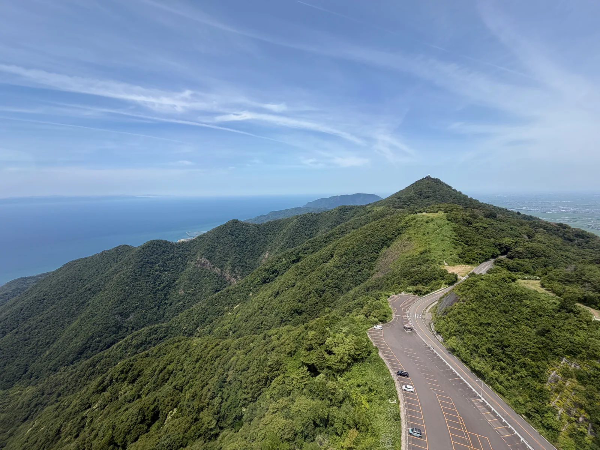
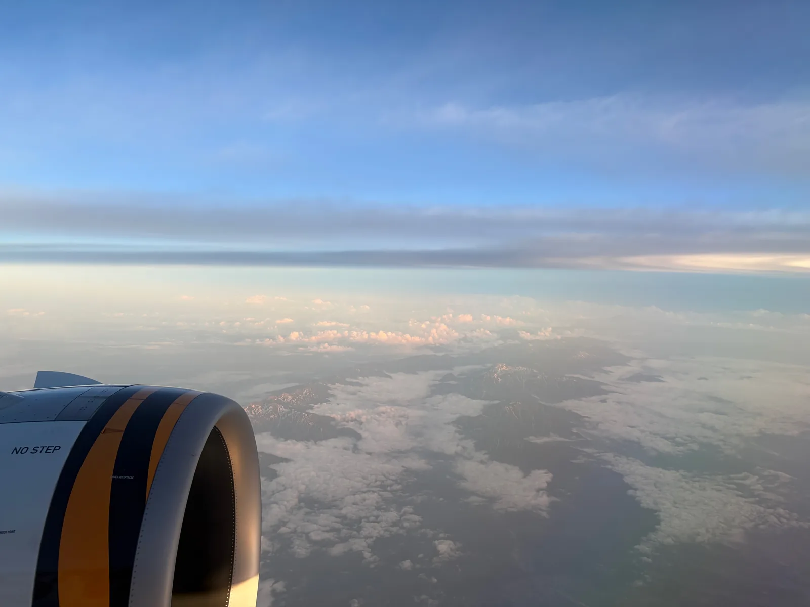

PHOTO STORY
二十八張照片，
二十八個瞬間。
每一幕只說一件事。進入影像旅程後，可向下滑動或使用上下方向鍵前進。

這不是景點清單。
是從抵達到離開，被相機留下的順序。
THE ROUTE
從新潟機場落地，往彌彥山移動，再穿過日本海抵達佐渡。五天的路線在地圖上不算長，真正留下來的是每一次轉乘、天色和停下腳步的瞬間。
THE OTHER ROUTE
不只記錄去了哪裡。快門的速度、畫面的顏色，以及相機抬頭或低下的方向，也保存了旅程的節奏。
距離為相鄰 GPS 記錄點的路徑估算，包含交通移動；照片數與座標比例依原始相簿中繼資料統計。
PHOTO PULSE
前往佐渡的 7 月 1 日留下 661 張照片，占整趟旅程 35.4%。雨夜那天雖然照片最少，21 點的一小時卻集中拍了 47 張。
離岸的十分鐘，
城市縮小、海鳥靠近，而佐渡還在海的另一端。
快門按了三十五次。
FIVE DAYS IN COLOR
PHOTO STORY
每一幕只說一件事。進入影像旅程後，可向下滑動或使用上下方向鍵前進。
